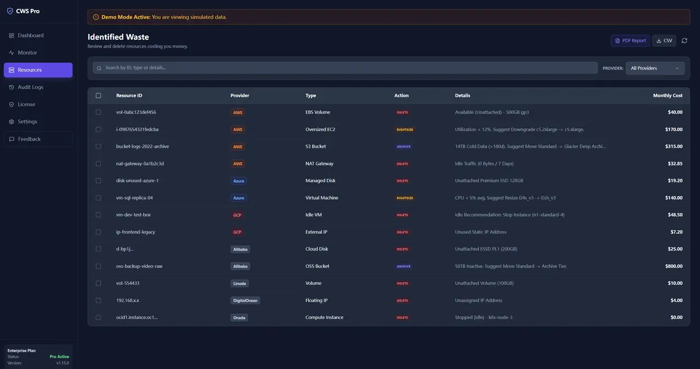

In enterprise review calls, pricing was rarely the first objection. The first real question was simpler: where do our cloud credentials go?
Teams usually discover the custody question before they care about dashboard polish. If credentials stay with the operator, security review starts from a smaller and clearer boundary.

Typical hosted FinOps products ask for a cross-account role early. Once approved, infrastructure metadata is collected into the vendor system: instance identifiers, bucket names, database inventory, account structure, and change history. That model can work. It also expands the blast radius if the vendor becomes the weak point.
Why this review question matters
Security teams are not only reviewing features. They are reviewing concentration risk. If one external platform is trusted by many customer accounts, that platform becomes a supply-chain target.
That is why we took the slower product path and kept the scanning boundary local. It reduces convenience in a few places, but it keeps the trust model readable.
That choice is not cosmetic. It decides whether the product behaves like a hosted inventory broker or a local scanner that fits stricter enterprise review paths.
The core rule is simple: credentials stay with the operator, not with us.
What runs locally
- Credential storage: provider credentials stay on the operator device.
- Scanning: API requests go from the operator environment directly to the cloud provider.
- Local evidence: findings, exports, and review artifacts are generated from the local workflow.
What the hosted side actually does
The hosted components support product operations: downloads, licensing, checkout, documentation, and public pages. That boundary is narrower than a vendor-managed cloud inventory platform, and the difference matters during security review.
| Area | Customer side | Hosted side |
|---|---|---|
| Credentials | Stored and used locally | Not used as cloud account login material |
| Cloud API access | Direct from operator environment | Not acting as a polling broker |
| Licensing and purchase | Client validates and displays status | Hosted service provides purchase and license endpoints |
Why we accept the tradeoff
A fully hosted product can look smoother in a demo. A narrower trust boundary looks better in a real review. For us, that tradeoff was worth taking because the product is meant for environments where security questions show up before procurement is finished.
This is also why the product story is not only about cost findings. It is about whether teams can adopt a cloud governance workflow without handing the full inventory plane to a third party first.
Related review material
If you are evaluating the product for internal rollout, review the broader Security page and the public Company page together. One explains the boundary. The other explains the operating stance behind it.
For security mapping by control family, continue with Security Whitepaper Part 1. For implementation guidance on token handling, pair this with the API Token Guide.